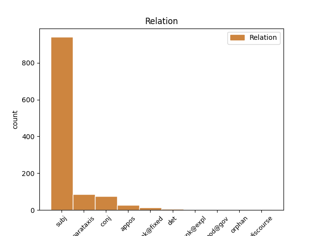
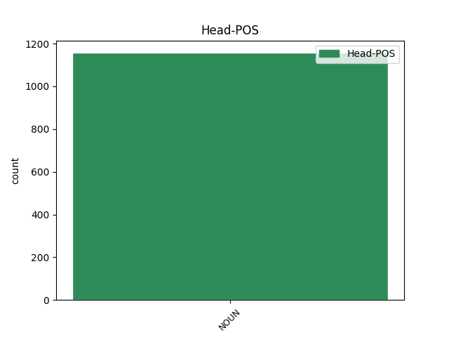
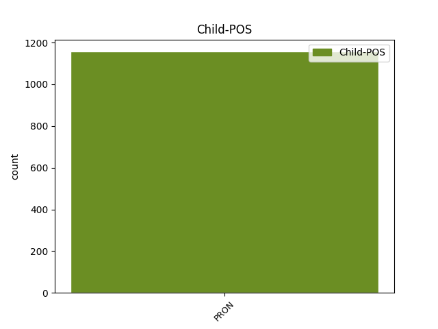

Distribution of features within this leaf



Agreement Rules sorted by frequency.
- When the dependent token is the subject(subj) of the head token, and the head token is NOUN and the dependent token is PRON.
1 Он он PRON _ Case=Nom|Gender=Masc|Number=Sing|Person=3 4 subj _ _
2 - _ _ _ _ 0 _ _ _
3 постоянный _ _ _ _ 0 _ _ _
4 импровизатор импровизатор NOUN _ Animacy=Anim|Case=Nom|Gender=Masc|Number=Sing 0 _ _ _
5 , _ _ _ _ 0 _ _ _
6 ибо _ _ _ _ 0 _ _ _
7 у _ _ _ _ 0 _ _ _
8 него _ _ _ _ 0 _ _ _
9 нет _ _ _ _ 0 _ _ _
10 системы _ _ _ _ 0 _ _ _
11 , _ _ _ _ 0 _ _ _
12 а _ _ _ _ 0 _ _ _
13 имеются _ _ _ _ 0 _ _ _
14 только _ _ _ _ 0 _ _ _
15 уловки _ _ _ _ 0 _ _ _
16 " _ _ _ _ 0 _ _ _
17 . _ _ _ _ 0 _ _ _
1 Стремление _ _ _ _ 0 _ _ _
2 к _ _ _ _ 0 _ _ _
3 автаркии _ _ _ _ 0 _ _ _
4 , _ _ _ _ 0 _ _ _
5 обособленности _ _ _ _ 0 _ _ _
6 , _ _ _ _ 0 _ _ _
7 замене _ _ _ _ 0 _ _ _
8 федеративных _ _ _ _ 0 _ _ _
9 начал _ _ _ _ 0 _ _ _
10 конфедеративными _ _ _ _ 0 _ _ _
11 прослеживается _ _ _ _ 0 _ _ _
12 и _ _ _ _ 0 _ _ _
13 в _ _ _ _ 0 _ _ _
14 отрицании _ _ _ _ 0 _ _ _
15 прибалтийскими _ _ _ _ 0 _ _ _
16 республиками _ _ _ _ 0 _ _ _
17 принципа _ _ _ _ 0 _ _ _
18 единства единство NOUN _ Animacy=Inan|Case=Gen|Gender=Neut|Number=Sing 0 _ _ _
19 законодательного _ _ _ _ 0 _ _ _
20 регулирования _ _ _ _ 0 _ _ _
21 и _ _ _ _ 0 _ _ _
22 приоритета _ _ _ _ 0 _ _ _
23 , _ _ _ _ 0 _ _ _
24 то то PRON _ Animacy=Inan|Case=Nom|Gender=Neut|Number=Sing 18 parataxis _ _
25 есть _ _ _ _ 0 _ _ _
26 верховенства _ _ _ _ 0 _ _ _
27 союзного _ _ _ _ 0 _ _ _
28 закона _ _ _ _ 0 _ _ _
29 . _ _ _ _ 0 _ _ _
1 Ссылаясь _ _ _ _ 0 _ _ _
2 на _ _ _ _ 0 _ _ _
3 западные _ _ _ _ 0 _ _ _
4 и _ _ _ _ 0 _ _ _
5 русские _ _ _ _ 0 _ _ _
6 источники _ _ _ _ 0 _ _ _
7 , _ _ _ _ 0 _ _ _
8 Матфей _ _ _ _ 0 _ _ _
9 Стрийковский _ _ _ _ 0 _ _ _
10 в _ _ _ _ 0 _ _ _
11 своей _ _ _ _ 0 _ _ _
12 " _ _ _ _ 0 _ _ _
13 Хронике _ _ _ _ 0 _ _ _
14 " _ _ _ _ 0 _ _ _
15 пишет _ _ _ _ 0 _ _ _
16 , _ _ _ _ 0 _ _ _
17 что _ _ _ _ 0 _ _ _
18 " _ _ _ _ 0 _ _ _
19 с _ _ _ _ 0 _ _ _
20 этого _ _ _ _ 0 _ _ _
21 времени время NOUN _ Animacy=Inan|Case=Gen|Gender=Neut|Number=Sing 0 _ _ _
22 ( _ _ _ _ 0 _ _ _
23 то то PRON _ Animacy=Inan|Case=Nom|Gender=Neut|Number=Sing 21 appos _ _
24 есть _ _ _ _ 0 _ _ _
25 после _ _ _ _ 0 _ _ _
26 крещения _ _ _ _ 0 _ _ _
27 Руси _ _ _ _ 0 _ _ _
28 ) _ _ _ _ 0 _ _ _
29 все _ _ _ _ 0 _ _ _
30 русские _ _ _ _ 0 _ _ _
31 народы _ _ _ _ 0 _ _ _
32 Белой _ _ _ _ 0 _ _ _
33 , _ _ _ _ 0 _ _ _
34 Восточной _ _ _ _ 0 _ _ _
35 , _ _ _ _ 0 _ _ _
36 Северной _ _ _ _ 0 _ _ _
37 и _ _ _ _ 0 _ _ _
38 на _ _ _ _ 0 _ _ _
39 Юге _ _ _ _ 0 _ _ _
40 расположенной _ _ _ _ 0 _ _ _
41 Руси _ _ _ _ 0 _ _ _
42 , _ _ _ _ 0 _ _ _
43 постоянно _ _ _ _ 0 _ _ _
44 и _ _ _ _ 0 _ _ _
45 твердо _ _ _ _ 0 _ _ _
46 пребывают _ _ _ _ 0 _ _ _
47 в _ _ _ _ 0 _ _ _
48 вере _ _ _ _ 0 _ _ _
49 христианской _ _ _ _ 0 _ _ _
50 за _ _ _ _ 0 _ _ _
51 обрядом _ _ _ _ 0 _ _ _
52 и _ _ _ _ 0 _ _ _
53 обычаями _ _ _ _ 0 _ _ _
54 греческими _ _ _ _ 0 _ _ _
55 , _ _ _ _ 0 _ _ _
56 под _ _ _ _ 0 _ _ _
57 главенством _ _ _ _ 0 _ _ _
58 Константинопольского _ _ _ _ 0 _ _ _
59 патриарха _ _ _ _ 0 _ _ _
60 " _ _ _ _ 0 _ _ _
61 . _ _ _ _ 0 _ _ _
1 Космическая _ _ _ _ 0 _ _ _
2 техника _ _ _ _ 0 _ _ _
3 с _ _ _ _ 0 _ _ _
4 ее _ _ _ _ 0 _ _ _
5 жесткими _ _ _ _ 0 _ _ _
6 требованиями _ _ _ _ 0 _ _ _
7 прочности _ _ _ _ 0 _ _ _
8 , _ _ _ _ 0 _ _ _
9 надежности _ _ _ _ 0 _ _ _
10 , _ _ _ _ 0 _ _ _
11 весовыми _ _ _ _ 0 _ _ _
12 ограничениями _ _ _ _ 0 _ _ _
13 при _ _ _ _ 0 _ _ _
14 экстремальных _ _ _ _ 0 _ _ _
15 рабочих _ _ _ _ 0 _ _ _
16 режимах _ _ _ _ 0 _ _ _
17 потребовала _ _ _ _ 0 _ _ _
18 разработки _ _ _ _ 0 _ _ _
19 новых _ _ _ _ 0 _ _ _
20 технологических _ _ _ _ 0 _ _ _
21 процессов _ _ _ _ 0 _ _ _
22 - _ _ _ _ 0 _ _ _
23 плазменного _ _ _ _ 0 _ _ _
24 напыления _ _ _ _ 0 _ _ _
25 , _ _ _ _ 0 _ _ _
26 химического _ _ _ _ 0 _ _ _
27 фрезерования фрезерование NOUN _ Animacy=Inan|Case=Gen|Gender=Neut|Number=Sing 0 _ _ _
28 и _ _ _ _ 0 _ _ _
29 т. то PRON _ Animacy=Inan|Case=Dat|Gender=Neut|Number=Sing 27 conj _ _
30 п. _ _ _ _ 0 _ _ _
31 , _ _ _ _ 0 _ _ _
32 создания _ _ _ _ 0 _ _ _
33 новых _ _ _ _ 0 _ _ _
34 композиционных _ _ _ _ 0 _ _ _
35 материалов _ _ _ _ 0 _ _ _
36 , _ _ _ _ 0 _ _ _
37 способных _ _ _ _ 0 _ _ _
38 выдерживать _ _ _ _ 0 _ _ _
39 сверхнизкие _ _ _ _ 0 _ _ _
40 и _ _ _ _ 0 _ _ _
41 сверхвысокие _ _ _ _ 0 _ _ _
42 температуры _ _ _ _ 0 _ _ _
43 , _ _ _ _ 0 _ _ _
44 устойчивых _ _ _ _ 0 _ _ _
45 к _ _ _ _ 0 _ _ _
46 переменным _ _ _ _ 0 _ _ _
47 нагрузкам _ _ _ _ 0 _ _ _
48 , _ _ _ _ 0 _ _ _
49 вибрациям _ _ _ _ 0 _ _ _
50 , _ _ _ _ 0 _ _ _
51 резкой _ _ _ _ 0 _ _ _
52 смене _ _ _ _ 0 _ _ _
53 напряжений _ _ _ _ 0 _ _ _
54 . _ _ _ _ 0 _ _ _
1 Но _ _ _ _ 0 _ _ _
2 уж _ _ _ _ 0 _ _ _
3 чего _ _ _ _ 0 _ _ _
4 точно _ _ _ _ 0 _ _ _
5 удавалось _ _ _ _ 0 _ _ _
6 добиться _ _ _ _ 0 _ _ _
7 , _ _ _ _ 0 _ _ _
8 так _ _ _ _ 0 _ _ _
9 это это PRON _ Animacy=Inan|Case=Nom|Gender=Neut|Number=Sing 10 unk@expl _ _
10 переключения переключение NOUN _ Animacy=Inan|Case=Gen|Gender=Neut|Number=Sing 0 _ _ _
11 коррупционных _ _ _ _ 0 _ _ _
12 потоков _ _ _ _ 0 _ _ _
13 на _ _ _ _ 0 _ _ _
14 более _ _ _ _ 0 _ _ _
15 высокий _ _ _ _ 0 _ _ _
16 уровень _ _ _ _ 0 _ _ _
17 власти _ _ _ _ 0 _ _ _
18 . _ _ _ _ 0 _ _ _
1 В _ _ _ _ 0 _ _ _
2 самом _ _ _ _ 0 _ _ _
3 популярном _ _ _ _ 0 _ _ _
4 комнатном _ _ _ _ 0 _ _ _
5 масштабе _ _ _ _ 0 _ _ _
6 H0 _ _ _ _ 0 _ _ _
7 ( _ _ _ _ 0 _ _ _
8 1 _ _ _ _ 0 _ _ _
9 : _ _ _ _ 0 _ _ _
10 87 _ _ _ _ 0 _ _ _
11 ) _ _ _ _ 0 _ _ _
12 локомотив _ _ _ _ 0 _ _ _
13 фирмы _ _ _ _ 0 _ _ _
14 Lemaco _ _ _ _ 0 _ _ _
15 стоит _ _ _ _ 0 _ _ _
16 около _ _ _ _ 0 _ _ _
17 $ _ _ _ _ 0 _ _ _
18 10000 _ _ _ _ 0 _ _ _
19 , _ _ _ _ 0 _ _ _
20 зато _ _ _ _ 0 _ _ _
21 с _ _ _ _ 0 _ _ _
22 помощью _ _ _ _ 0 _ _ _
23 пинцета _ _ _ _ 0 _ _ _
24 можно _ _ _ _ 0 _ _ _
25 открыть _ _ _ _ 0 _ _ _
26 дверцу _ _ _ _ 0 _ _ _
27 в _ _ _ _ 0 _ _ _
28 кабину _ _ _ _ 0 _ _ _
29 , _ _ _ _ 0 _ _ _
30 а _ _ _ _ 0 _ _ _
31 внутри _ _ _ _ 0 _ _ _
32 нее она PRON _ Case=Gen|Gender=Fem|Number=Sing|Person=3 34 orphan _ _
33 - _ _ _ _ 0 _ _ _
34 дверцу дверца NOUN _ Animacy=Inan|Case=Acc|Gender=Fem|Number=Sing 0 _ _ _
35 топки _ _ _ _ 0 _ _ _
36 . _ _ _ _ 0 _ _ _
1 Но _ _ _ _ 0 _ _ _
2 , _ _ _ _ 0 _ _ _
3 тем то PRON _ Animacy=Inan|Case=Ins|Gender=Neut|Number=Sing 9 discourse _ _
4 не _ _ _ _ 0 _ _ _
5 менее _ _ _ _ 0 _ _ _
6 , _ _ _ _ 0 _ _ _
7 сейчас _ _ _ _ 0 _ _ _
8 самое _ _ _ _ 0 _ _ _
9 время время NOUN _ Animacy=Inan|Case=Nom|Gender=Neut|Number=Sing 0 _ _ _
10 , _ _ _ _ 0 _ _ _
11 как _ _ _ _ 0 _ _ _
12 считают _ _ _ _ 0 _ _ _
13 специалисты _ _ _ _ 0 _ _ _
14 , _ _ _ _ 0 _ _ _
15 начинать _ _ _ _ 0 _ _ _
16 делать _ _ _ _ 0 _ _ _
17 долгосрочные _ _ _ _ 0 _ _ _
18 инвестиции _ _ _ _ 0 _ _ _
19 . _ _ _ _ 0 _ _ _
Disagree Examples:
1 Все _ _ _ _ 0 _ _ _
2 это _ _ _ _ 0 _ _ _
3 подымалось _ _ _ _ 0 _ _ _
4 из _ _ _ _ 0 _ _ _
5 пшеницы _ _ _ _ 0 _ _ _
6 по _ _ _ _ 0 _ _ _
7 мере мера NOUN _ Animacy=Inan|Case=Dat|Gender=Fem|Number=Sing 0 _ _ _
8 того то PRON _ Animacy=Inan|Case=Gen|Gender=Neut|Number=Sing 7 unk@fixed _ _
9 как _ _ _ _ 0 _ _ _
10 немцы _ _ _ _ 0 _ _ _
11 приближались _ _ _ _ 0 _ _ _
12 . _ _ _ _ 0 _ _ _
1 И _ _ _ _ 0 _ _ _
2 по _ _ _ _ 0 _ _ _
3 мере мера NOUN _ Animacy=Inan|Case=Dat|Gender=Fem|Number=Sing 0 _ _ _
4 того то PRON _ Animacy=Inan|Case=Gen|Gender=Neut|Number=Sing 3 unk@fixed _ _
5 как _ _ _ _ 0 _ _ _
6 он _ _ _ _ 0 _ _ _
7 проходил _ _ _ _ 0 _ _ _
8 , _ _ _ _ 0 _ _ _
9 люди _ _ _ _ 0 _ _ _
10 подымались _ _ _ _ 0 _ _ _
11 из _ _ _ _ 0 _ _ _
12 снега _ _ _ _ 0 _ _ _
13 , _ _ _ _ 0 _ _ _
14 облепляли _ _ _ _ 0 _ _ _
15 пушку _ _ _ _ 0 _ _ _
16 , _ _ _ _ 0 _ _ _
17 которую _ _ _ _ 0 _ _ _
18 до _ _ _ _ 0 _ _ _
19 этого _ _ _ _ 0 _ _ _
20 момента _ _ _ _ 0 _ _ _
21 толкал _ _ _ _ 0 _ _ _
22 один _ _ _ _ 0 _ _ _
23 командир _ _ _ _ 0 _ _ _
24 батареи _ _ _ _ 0 _ _ _
25 . _ _ _ _ 0 _ _ _
1 Нравился _ _ _ _ 0 _ _ _
2 и _ _ _ _ 0 _ _ _
3 он _ _ _ _ 0 _ _ _
4 сам _ _ _ _ 0 _ _ _
5 себе _ _ _ _ 0 _ _ _
6 : _ _ _ _ 0 _ _ _
7 крепкие _ _ _ _ 0 _ _ _
8 лыжные _ _ _ _ 0 _ _ _
9 ботинки _ _ _ _ 0 _ _ _
10 , _ _ _ _ 0 _ _ _
11 шерстяные _ _ _ _ 0 _ _ _
12 носки _ _ _ _ 0 _ _ _
13 почти _ _ _ _ 0 _ _ _
14 до _ _ _ _ 0 _ _ _
15 колен _ _ _ _ 0 _ _ _
16 , _ _ _ _ 0 _ _ _
17 толстый _ _ _ _ 0 _ _ _
18 мохнатый _ _ _ _ 0 _ _ _
19 свитер _ _ _ _ 0 _ _ _
20 и _ _ _ _ 0 _ _ _
21 австрийская _ _ _ _ 0 _ _ _
22 шапочка _ _ _ _ 0 _ _ _
23 с _ _ _ _ 0 _ _ _
24 козырьком _ _ _ _ 0 _ _ _
25 , _ _ _ _ 0 _ _ _
26 но _ _ _ _ 0 _ _ _
27 больше _ _ _ _ 0 _ _ _
28 всего все PRON _ Animacy=Inan|Case=Gen|Gender=Neut|Number=Sing 29 orphan _ _
29 лыжи лыжа NOUN _ Animacy=Inan|Case=Nom|Gender=Fem|Number=Plur 0 _ _ _
30 , _ _ _ _ 0 _ _ _
31 прекрасные _ _ _ _ 0 _ _ _
32 клееные _ _ _ _ 0 _ _ _
33 лыжи _ _ _ _ 0 _ _ _
34 , _ _ _ _ 0 _ _ _
35 стянутые _ _ _ _ 0 _ _ _
36 ремешками _ _ _ _ 0 _ _ _
37 . _ _ _ _ 0 _ _ _
1 И _ _ _ _ 0 _ _ _
2 как _ _ _ _ 0 _ _ _
3 много _ _ _ _ 0 _ _ _
4 причин _ _ _ _ 0 _ _ _
5 у _ _ _ _ 0 _ _ _
6 него _ _ _ _ 0 _ _ _
7 теперь _ _ _ _ 0 _ _ _
8 , _ _ _ _ 0 _ _ _
9 чтобы _ _ _ _ 0 _ _ _
10 грустить _ _ _ _ 0 _ _ _
11 , _ _ _ _ 0 _ _ _
12 потому _ _ _ _ 0 _ _ _
13 что _ _ _ _ 0 _ _ _
14 жизнь _ _ _ _ 0 _ _ _
15 не _ _ _ _ 0 _ _ _
16 получилась _ _ _ _ 0 _ _ _
17 , _ _ _ _ 0 _ _ _
18 а _ _ _ _ 0 _ _ _
19 он _ _ _ _ 0 _ _ _
20 не _ _ _ _ 0 _ _ _
21 грустит _ _ _ _ 0 _ _ _
22 , _ _ _ _ 0 _ _ _
23 его _ _ _ _ 0 _ _ _
24 обыкновенная _ _ _ _ 0 _ _ _
25 работа работа NOUN _ Animacy=Inan|Case=Nom|Gender=Fem|Number=Sing 0 _ _ _
26 и _ _ _ _ 0 _ _ _
27 то то PRON _ Animacy=Inan|Case=Nom|Gender=Neut|Number=Sing 25 conj _ SpaceAfter=No
28 , _ _ _ _ 0 _ _ _
29 что _ _ _ _ 0 _ _ _
30 у _ _ _ _ 0 _ _ _
31 него _ _ _ _ 0 _ _ _
32 нет _ _ _ _ 0 _ _ _
33 никакой _ _ _ _ 0 _ _ _
34 славы _ _ _ _ 0 _ _ _
35 , _ _ _ _ 0 _ _ _
36 вовсе _ _ _ _ 0 _ _ _
37 не _ _ _ _ 0 _ _ _
38 печалит _ _ _ _ 0 _ _ _
39 , _ _ _ _ 0 _ _ _
40 не _ _ _ _ 0 _ _ _
41 ужасает _ _ _ _ 0 _ _ _
42 его _ _ _ _ 0 _ _ _
43 . _ _ _ _ 0 _ _ _
1 Однако _ _ _ _ 0 _ _ _
2 это это PRON _ Animacy=Inan|Case=Nom|Gender=Neut|Number=Sing 3 subj _ _
3 случай случай NOUN _ Animacy=Inan|Case=Nom|Gender=Masc|Number=Sing 0 _ _ _
4 уникальный _ _ _ _ 0 _ _ _
5 , _ _ _ _ 0 _ _ _
6 и _ _ _ _ 0 _ _ _
7 реставраторам _ _ _ _ 0 _ _ _
8 остается _ _ _ _ 0 _ _ _
9 только _ _ _ _ 0 _ _ _
10 мечтать _ _ _ _ 0 _ _ _
11 , _ _ _ _ 0 _ _ _
12 чтобы _ _ _ _ 0 _ _ _
13 укрепление _ _ _ _ 0 _ _ _
14 происходило _ _ _ _ 0 _ _ _
15 без _ _ _ _ 0 _ _ _
16 дополнительных _ _ _ _ 0 _ _ _
17 материалов _ _ _ _ 0 _ _ _
18 . _ _ _ _ 0 _ _ _